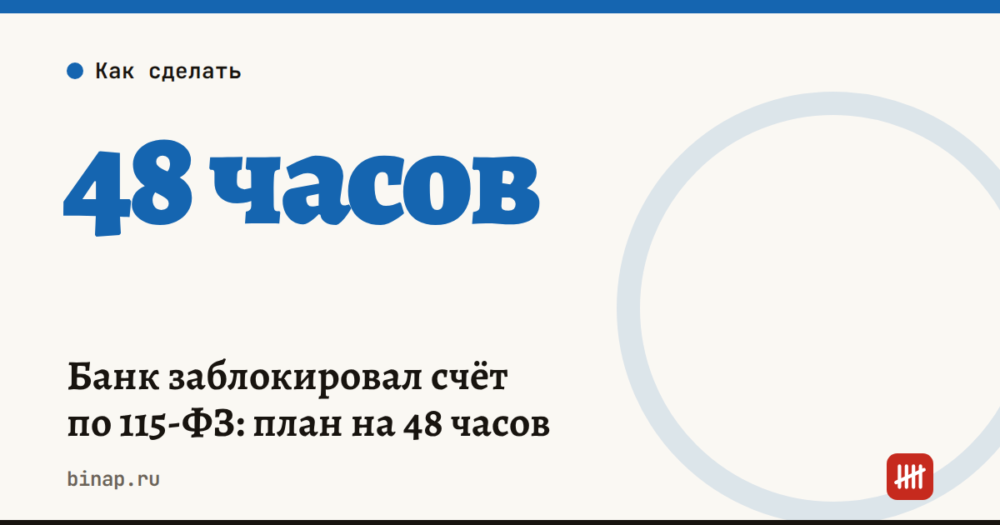

Банк заблокировал счёт по 115-ФЗ: план на 48 часов

Блокировка по 115-ФЗ — не приговор. Но в первые двое суток важно не паниковать и не спорить, а собрать документы и объяснить банку экономический смысл операций.
Коротко
- Запросите у банка письменно, какие операции вызвали вопросы и какие документы нужны.
- Соберите пакет по спорным операциям: договоры, счета, акты, накладные — и объясните смысл каждой.
- Проверьте свой уровень риска на платформе ЦБ «Знай своего клиента» — через банк или Госуслуги.
- Переведите работу на запасной счёт в другом банке, если он есть.
- Несправедливый отказ можно обжаловать: сначала в банке, затем через межведомственную комиссию при ЦБ.
Сроки, изменения и разборы для ИП и самозанятых — каждое утро в Telegram и MAX. Подпишитесь, чтобы не пропустить.
План на первые 48 часов
- Узнайте причину письменно. Запросите у банка, какие операции вызвали вопросы и какие документы нужны. Отвечайте в срок, который указан в запросе.
- Соберите пакет: договоры, счета, акты, накладные по спорным операциям. Объясните экономический смысл каждой — зачем платили и за что получили.
- Проверьте свой уровень риска на платформе ЦБ «Знай своего клиента» — через банк или Госуслуги. Зелёный, жёлтый или красный уровень определяет, что будет дальше.
- Переведите работу на запасной счёт, если он есть. Если нет — откройте в другом банке, пока уровень риска не красный.
- Если отказ несправедливый — обжалуйте: сначала в банке, затем через межведомственную комиссию при ЦБ.
Открыть запасной счёт в другом банке — ссылка.
Как написать ответ банку
- Коротко опишите операцию: кто контрагент, за что платёж, по какому договору.
- Объясните экономический смысл: например, «оплата поставщику за товар, который мы продаём через маркетплейс».
- Приложите документы, а не только пояснения.
- Сохраните копию ответа и дату отправки.
Что чаще всего вызывает вопросы банка
| Признак | Как снизить риск |
|---|---|
| Деньги пришли и сразу ушли дальше — транзит | держите документы, что это оплата за реальные товары или услуги |
| Крупное снятие наличных | объясняйте цель и храните подтверждающие документы |
| Операции не похожи на вашу деятельность | обновите сведения о виде деятельности в банке, предупреждайте о новых направлениях |
| Платежи без назначения или с общими формулировками | указывайте в назначении договор и предмет оплаты |
| Резкий рост оборотов | предупредите менеджера банка заранее |
С октября 2026 года банки по рекомендациям ЦБ проверяют происхождение наличных у ИП и компаний при любой сумме — подробнее в статье банки проверяют любые наличные ИП и ООО.
Что сделать сегодня, если блокировки нет
- Откройте второй бесплатный счёт в другом банке — это спасает бизнес на время разбирательства. Как выбрать банк по своим оборотам, — в статье где открыть счёт ИП.
- Пропишите назначение платежей подробно: договор и предмет.
- Храните договоры и закрывающие документы по крупным операциям в одной папке.
Частые вопросы
Может ли банк заблокировать счёт без объяснений? Банк обязан сообщить о решении, а клиент вправе запросить, какие документы нужны. Запрашивайте всё письменно — это пригодится при обжаловании.
Что делать, если уровень риска на платформе ЦБ стал красным? Обжаловать через банк и межведомственную комиссию при ЦБ, приложив документы, которые объясняют операции. Параллельно продолжайте работу через запасной счёт, если он открыт до присвоения красного уровня.
Можно ли платить налоги, если счёт заблокирован? Обычно платежи в бюджет банк проводит, но уточните это у своего банка — и держите запасной счёт, чтобы не сорвать сроки.